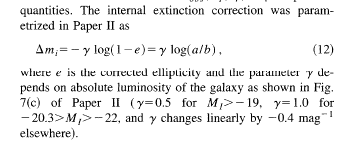

ASTRONOMY 4940 Spring 2011 Project notes
Redshifts
We are using the Hα redshift. Note that we should drop ones with
zConf > 0.35 which have bad measures. We should also look at ones which have
Z_WARNING set to something other than blank.
Correction of velocities to the rest frame of the CMB:
Kogut et al. 1993 give the motion of the Sun wrt the CMB is
V = 369.0+/-2.5 km/s in direction of l = 264.31+/-0.19 degrees and
b = 48.05 +/- 0.1 degrees. From NED, we find for the direction of
Zw1400.4+0949, this translates to a correction to the observed
heliocentric velocity of +260 km/s.
The CMB correction applies to objects beyond the local flow field.
For the moment, we won't worry about it for Zw1400.4+0949.
Calculation of distances:
For most galaxies, we use the CMB velocity and divide by the Hubble
constant, which we adopt to be 70 km/s/Mpc.
However, for galaxies believed to be a member of the ZwCl 1400.4+0949
cluster, we assign the distance using the mean redshift of the cluster.
Group/cluster membership:
Refer to the discussion in Koranyi & Geller (2002, AJ 123, 100).
As in that reference, we adopt the center to be the peak of the
ROSAT X-ray emission, RA = 14h02m48s = +09d19'40" = (210.70,9.33).
We should look up the ROSAT reference in Price et al. (1991).
This is virtually identical to the position for WBL 486 given in
NED.
To determine the mean distance and membership, we examine the
histogram of CMB velocities for galaxies within 0.68 and 1.36 degrees
of the cluster X-ray position. I settle on those regions iteratively,
noting that at 83.7 Mpc, 1 Mpc = 41 arcmin = 0.68 degrees.
| Radius | Vcmb range | Group | # of galaxies | Vsys | sigma |
|---|
| 0.68deg | 5600-6600 | Zw1400+09 | 45 | 5861 | 241 |
| 0.68deg | 6600-7600 | Background | 29 | 6890 | 201 |
Following Koranyi & Geller, we assume objects at 5000 km/s are in the foreground.
We use Hubble flow correction to CMB velocities for those objects.
Mass of the cluster:
Methods of estimating the masses of groups of galaxies are discussed in a paper
by Heisler, Tremaine & Bahcall, 1985, ApJ 298, 8. As mentioned there, most estimates of
the mass of groups are based on application of the Virial Theorem. The trick is that,
in practical applications, we
observe only radial velocities and projected (on the sky) positions, and we have to
deal with "interlopers", unrelated objects projected onto the group as it appears
to us.
For each object which we designate as a cluster member, we have (a) the line-of-sight
velocity relative to the cluster mean and (b) the projected separation from the
centroid. Equation (11) of Heisler, Tremaine & Bahcall (1985) can then be used
to estimate the mass, since they discuss exactly what correction factors to use
to deal with projected quantities.
HI mass:
The HI mass is calculated simply from the HI flux in Jy-km/s and the distance in Mpc.
is given by:
HI mass (solar masses) = 2.36E+06 * Dist2 * HI line flux.
Linear diameters:
We can calculate the linear diameter from one of the radii given in the SDSS photometric
database. But see the note on HI deficiency, below.
For the angular diameter, we start with the DR7 value petroR90_r,
the radius, in arcsec, encompassing 90% of the Petrosian magnitude. You should
probably find out what a "Petrosian magnitude" is.
The linear diameter then is calculated from simple geometry, using 2X petroR90_r,
and adopting the distance to each galaxy.
Note In round 1, I find 4 galaxies with anomalously low diameters
(D < 3 kpc). Check them out below; these clearly demonstrate the pitfalls of SDSS pipeline catalogs.
| AGC 238643 1355583+085936 208.9929 8.99333 |
SDSSNavigate |
NED |
off center knot in LSB object; petroR90 not good |
| AGC 249100 1402578+103713 210.7408 10.62028 |
SDSSNavigate |
NED |
2 photoObjs in center of late-type barred spiral; replacing 587736477051322652 instead of 587736477051322663
This works and this galaxy
appears to get fixed! |
| AGC 243852 1407045+104245 211.7688 10.71250 |
SDSSNavigate |
NED |
Blue knot in LSB object |
| AGC 243830 1414435+100429 213.6812 10.07472 |
SDSSNavigate |
NED |
In the glare of a very bright star. |
HI Deficiency:
We will following the thinking in Haynes & Giovanelli (1984) and Solanes
et al. (1996). The trick is that the diameters we are using are different
from the ones employed in those studies, so we should check the calibration
of the relation.
We have to work a little more on this.
Here is a
first crack at looking at how the HI mass varies with linear diameter.
It is a log-log plot; the filled blue symbols represent galaxies identified with
MKW 12 (sepdeg< 1.36, 5600 < vcmb < 6600) while the red ones show galaxies
in the background group in the same sky region (sepdeg< 1.36, 6600 < vcmb < 7600).
I need to remove those anomalous points (with bad linear diameters petroR90_r,
as discussed above).
Inclinations:
The inclination can be derived from the observed axial ratio b/a where
b is the minor axis and a is the major axis. We adopt from SDSS DR7 the
observed expAB_r which is the axial ratio in the R-band. The inclination
is given by:
cos2i = (r2 - p2)/(1 - p2)
where r = b/a, the observed axial ratio, and p = c/a, the intrinsic
axial ratio. The intrinsic axial ratio is probably dependent on the
morphological type, and we adopt p = 0.2 for types Sbc and earlier,
and 0.12 for later types.
Correction of magnitudes for galactic extinction:
NED gives a value of the (B-V) color excess, E(B-V), of 0.031;
this comes from the DIRBE sky maps of interstellar dust
emission made by the COBE satellite
as understood by Schlegel, Finkbeiner and Davis (1998,
ApJ 500, 525).
We need to know how to apply that to SDSS magnitudes.
Table 6 of Schlegel, Finkbeiner and Davis (1998)
gives the exinction A_lambda relative to E(B-V) for the SDSS filters,
namely:
| Filter | L_eff | A/A_V | A/E(B-V) |
|---|
| Sloan u | 3546 | 1.579 | 5.155 |
| Sloan g | 4925 | 1.161 | 3.793 |
| Sloan r | 6335 | 0.843 | 2.751 |
| Sloan i | 7799 | 0.639 | 2.086 |
| Sloan z | 9294 | 0.453 | 1.479 |
The SDSS correction for E_BminusV = 0.031 therefore is for u,g,r,i,z respectively:
0.160, 0.118, 0.085, 0.065 and 0.046 magnitudes.
Correction of magnitudes for internal extinction:
This is a little messy, because the correction depends on the
inclination of the galaxy and the adopted extinction law.
I have not been able to find a reference which explains this well for
SDSS filters, so I am depending on the (exhaustive) discussion carried
out for (Landolt-based) I-band
by Giovanelli et al. (1995, Astro J 110, 1059).
We use the basic result given in that paper and their formula
which gives the internal extinction depending on the observed axial
ratio (inclination) and on galaxy
luminosity. This is discussed further in Giovanelli et al. (1997,
Astro J. 113, 22; here is what they say:

We will use their basic values for I-band and then adopt the same relationships
among the other wavelengths as given by Schlegel et al. (1998; see above).
To perform this correction, we have to calculate the Landolt I-band absolute magnitude
for each galaxy, starting with the SDSS i-band magnitude and the distance.
The SDSS website gives a conversion relation (admittedly for stars, not galaxies)
I = r - 1.2444*(r - i) - 0.382
(See also the
ALFALFA U-grad page.)
Let's convert using the galactic extinction corrected magnitudes at the r and i bands.
Once we calculate the I-band magnitude, we can calculate the I-band absolute
magnitude simply.
Schlegel, Finkbeiner and Davis (1998) also give conversions for Milky Way extinction
in Landolt I-band (as for Sloan; see the discussion of galactic extinction above). Assuming
the same relationship applies in other galaxies as in the MW, we can use their
value of Landolt I in their Table 6 :
| Filter | L_eff | A/A_V | A/E(B-V) |
|---|
| Landolt I | 8090 | 0.594 | 1.940 |
The internal extinction correction at SDSS i band Δmi
then is just (2.086/1.940)*ΔmI. We can similarly calculate the
internal extinction corrections for u, g, r, z by scaling to the i band
value, using the relations given in Table 6, e.g. Δmu
= (5.155/2.086)*Δmi, etc.
Correction of magnitudes for K-correction:
Blanton et al (2003), AJ 125, 2348 discuss the K-corrections for
SDSS data in great detail; they also provide a library of appropriate
IDL code which can be downloaded from Mike's web page. The median
redshift of galaxies in the SDSS spectroscopic sample is 0.11, much
higher than that of our sample. We expect that the K-correction
will be very small. In fact, they state (Section 2.2, p124):
"...We want to emphasize here that, while K-correcting to a fixed-frame
bandpass is sometimes necessary in order to achieve a scientific
objective, it is not always necessary or appropriate. Because
K-corretions are inherently uncertain (the broadband magnitudes do
not uniquely determine the SED), they should be avoided or minimized
when possible..."
So, since our sample is at such low redshift, I suggest we
not apply a K-correction.
We now can calculate the corrected apparent magnitude in each filter band as:
mcorr_f = petromag_f - Δm(galext) - Δm(intext)
Whoopee, now we can calculate absolute magnitudes!
Calculation of Absolute Magnitudes:
The absolute magnitude for each filter f is given by the simple expression:
absMag_f = mcorr_f + 5. - 5.* alog10(dist*1.0E+06)
and then the luminosity at that filter is:
luminosity_f = 10.**[0.4(absMag_Sun_f - absMag_f)]
We note the values given for the urgiz colors of the Sun at:
SDSS:
Assuming M(V)=+4.82, U-B=+0.195, B-V=+0.650, V-Rc=+0.36, and Rc-Ic=+0.32, the Sun has
M(g)= (+/-0.02)
u-g = +1.43 (+/-0.05)
g-r = +0.44 (+/-0.02)
r-i = +0.11 (+/-0.02)
i-z = +0.03 (+/-0.02)
so, we adopt M(r)= +5.12 - 0.44 = +4.68.
Calculation of stellar masses:
Once we have corrected magnitudes, we can calculate the stellar masses
associated with the observed luminosity. We adopt need to adopt a stellar
M/L according to the galaxy color. See Bell et al. 2003:
TABLE 7
Stellar Mass-to-Light Ratio as a Function of Color
(here _f refers to SDSS or 2MASS filter)
Color a_g b_g a_r b_r a_i b_i a_z b_z a_J b_J a_H b_H a_H b_H
u-g -0.221 0.485 -0.099 0.345 -0.053 0.268 -0.105 0.226 -0.128 0.169 -0.209 0.133 -0.260 0.123
u-r -0.390 0.417 -0.223 0.299 -0.151 0.233 -0.178 0.192 -0.172 0.138 -0.237 0.104 -0.273 0.091
u-i -0.375 0.359 -0.212 0.257 -0.144 0.201 -0.171 0.165 -0.169 0.119 -0.233 0.090 -0.267 0.077
u-z -0.400 0.332 -0.232 0.239 -0.161 0.187 -0.179 0.151 -0.163 0.105 -0.205 0.071 -0.232 0.056
g-r -0.499 1.519 -0.306 1.097 -0.222 0.864 -0.223 0.689 -0.172 0.444 -0.189 0.266 -0.209 0.197
g-i -0.379 0.914 -0.220 0.661 -0.152 0.518 -0.175 0.421 -0.153 0.283 -0.186 0.179 -0.211 0.137
g-z -0.367 0.698 -0.215 0.508 -0.153 0.402 -0.171 0.322 -0.097 0.175 -0.117 0.083 -0.138 0.047
r-i -0.106 1.982 -0.022 1.431 0.006 1.114 -0.052 0.923 -0.079 0.650 -0.148 0.437 -0.186 0.349
r-z -0.124 1.067 -0.041 0.780 -0.018 0.623 -0.041 0.463 -0.011 0.224 -0.059 0.076 -0.092 0.019
Color
B-V -0.942 1.737 -0.628 1.305 -0.520 1.094 -0.399 0.824 -0.261 0.433 -0.209 0.210 -0.206 0.135
B-R -0.976 1.111 -0.633 0.816 -0.523 0.683 -0.405 0.518 -0.289 0.297 -0.262 0.180 -0.264 0.138
Notes. Stellar M/L ratios are given by log(M/L) = a_f + b_f x color,
where the M/L ratio is in solar units.
If all galaxies are submaximal, then the above zero points a_f should be modified by
subtracting an IMF dependent constant as follows: 0.15 dex for a Kennicutt or
Kroupa IMF, and 0.4 dex for a Bottema IMF. Scatter in the above correlations
is 0.1 dex for all optical M/L ratios, and 0.1-0.2 dex for NIR M/L ratios
(larger for galaxies with blue optical colors). SDSS filters are in AB magnitudes;
Johnson BVR and JHK are in Vega magnitudes.
For our purposes, let's stick to the r-band and hence use:
log M/L(rband) = -0.306 + 1.097*(corrmag_g - corrmag_r)
M(stars) = L_r * M/L(rband)
Color-magnitude diagram
Ok, so now we can try to make a color-magnitude plot like the one in Baldry et al.
which plots AbsMag_r versus (u - r) color. Note that I use now corrected
magnitudes and colors (with corrections for galactic and internal extinction).
Baldry et al present a functional divider between the red and blue sequence given by:
divider= 2.06 - 0.244*dtanh(factor)
which I can include on the plot.
There are a few weird outliers on this diagram, and it is worth taking a look at
them so, here they are. See also the SDSS mosaic of their
images.
| ALFALFA | Too faint/blue? | 238636
SDSSNavigate |
very low surface brightness faint object |
| ALFALFA | Too blue? | 232563
SDSSNavigate
| interacting system |
| ALFALFA | Too faint? | 243859
SDSSNavigate
| very low surface brightness faint object |
| ALFALFA | Too faint? | 243835
SDSSNavigate
| very diffuse low surface brightness object |
| DR7 spect | Too blue? | 243916
SDSSNavigate
| small, compact galaxy |
| ALFALFA | Too faint? | 249095
SDSSNavigate
| very low surface brightness faint object |
| DR7 spect | Too red? | 730099
SDSSNavigate
| early type galaxy in pair; but watch nearby star |
| DR7 spect | Too red? | 249364
SDSSNavigate
| interacting system |
| DR7 spect & ALFALFA | Too faint? | 243852
SDSSNavigate
| HII knot in galaxy? |
| ALFALFA | Too faint? | 249109
SDSSNavigate
| very diffuse low surface brightness object |
| ALFALFA | Too faint? | 249118
SDSSNavigate
| very diffuse low surface brightness blue object |
| DR7 spect | Too red? | 244010
SDSSNavigate
| early type in glare of nearby star; color probably contaminated |
Starbursts versus AGN:
Sarah is investigating the ratios of emission line equivalent widths for galaxies in our
region and how they can be used to discriminate starburst from AGN.
The basic method of performing such classification is to examine the location
of each galaxy on an "Osterbrock diagram" as discussed in the book
"Astrophysics of Gaseous Nebulae and Active Galactic Nuclei" by
Donald Osterbrock (and the 2008 new edition of the same by
Osterbrock and Ferland; see Chapter 14 especially).
Kauffmann et al (2003 MNRAS, 346, 1055) select AGNs from the SDSS using:
log([OIII]λ5007/Hβ) >= {0.61/[log([NII]λ6583/Hα)-0.05]} + 1.3.
Here is the lineratios plot.
There are a few outliers; we should take a look to see if we understand what's up.
These objects have strange lineratios compared to Osterbrock & Ferland
yratio > 1.4 or < -1
xratio > 1
yratio 713708 2.00399804 2.28546691 0.69992298 0.02398900 -0.06 1.47 587736543625871510
yratio 713771 1.84882700 4.10145998 1.91484499 0.07510300 -0.35 1.41 587736477587734736
xratio 243884 54.40460205 3.20507312 98.11115265 51.38726425 1.23 0.28 588017726558830607
yratio 243860 1.30253100 4.78960323 3.74071908 0.00986084 -0.57 2.58 587736542553178754
yratio 713819 3.76380396 6.83772182 8.32061577 0.27839500 -0.26 1.48 587736478662131825
yratio 240082 2.03377104 4.15707493 0.00469569 0.20766100 -0.31 -1.65 587736543090311257
yratio 730130 8.12229824 5.26415014 6.16007423 0.02006800 0.19 2.49 587736478125719660
yratio 715930 4.19501305 4.44104195 5.93706417 0.16350999 -0.02 1.56 587736540943548456
yratio 713892 1.32766998 5.30448103 3.52231598 0.05954200 -0.60 1.77 587736478126047320
AGC 713708 208.3308 10.12167
SDSSNavigate
NED
AGC 713771 209.6637 11.07639
SDSSNavigate
NED
AGC 243884 210.0008 7.76444
SDSSNavigate
NED
AGC 243860 210.7525 9.04944
SDSSNavigate
NED
AGC 713819 211.2933 11.77111
SDSSNavigate
NED
AGC 240082 211.4288 9.51222
SDSSNavigate
NED
AGC 730130 212.2192 11.17778
SDSSNavigate
NED
AGC 715930 212.9183 7.80222
SDSSNavigate
NED
AGC 713892 212.9717 11.20917
SDSSNavigate
NED
Star formation rates
The Hα equivalent width (EW) provides a measure of the current rate of massive star formation.
A measure of the star formation rate SFR in solar masses per year is given by
SFR(Msolar/yr) = 7.9 x 10-42 L(Hα)
where L(Hα) is the luminosity in the Hα line in erg/s. Remember the
definition of equivalent width:
EW (Angstroms) = ∫ (Fcont - Fλ)/Fcont * dλ
with Fcont = 1 the continuum level unit normalized, Fλ the line profile
level, and dλ the sampling in wavelength units (Angstroms).
Also remember that EW < 1 for an absorption line and EW > 1 for an emission line.
We should be able to compute the flux of the Hα line from the EW via:
Fline(Hα) = EW(Hα) X Fcont(Hα).
so we need to find Fcont from the SDSS. We can get the value of
continuum flux at the line center from the SDSS database, Fcont, in
units of 10-17 ergs/s/cm^2/per Angstrom. We then can calculate
the Hα luminosity just by 4πDistance**2/Flux, using the proper units, of course.
There are several additional corrections we need to make: (1) for stellar absorption;
(b) for internal extinction and (3) for SDSS aperture (the fibers)
for internal extinction to the measured Balmer line equivalent
widths. These corrections are discussed by Nakamura et al. (2004, AJ 127, 2511) and
in Hopkins et al. (2003, ApJ 599, 971; this is the paper I am using now).
I am applying a straight correction for stellar Hα absorption
of 1.3 Angstroms; this seems to be an intermediate value and we should probably
investigate it further someday. I am not here making a correction for internal
extinction, but we could do that using the ratio of Hβ to H&alpha.
For the aperture correction, it is conventional practice to use a correction
based on scaling from the fiber magnitude to the Petrosian magnitude.
There is another discussion in the Appendix to the Hopkins et al. paper,
but I am not sure it will apply to this nearby sample. For the moment,
I use the fiber-to-Petrosian scaling aperture correction but this too is
work for the future.
Rotational velocities
The ALFALFA catalog gives values of the HI line profile width, measured at 50% of the peak, in km/s;
the observed full width W50 is related to twice the rotational velocity projected along the l.o.s.
To convert this to a disk rotational velocity, we have to first correct for the inclination of the disk,
using the inclination we derived above. Vrot = 1/2 * W50/sin(i).
Velocity dispersions
The SDSS dataset includes measures of the velocity dispersion of spectral lines, the parameter l.sigma in SDSS nomenclature.
The units of sigma are a bit weird, so that to convert to km/s you have to multiply by the speed of light and then
divide by the rest wavelength (l.sigma*300000.0/l.wave). Notice too that they are measured only over the aperture of
the optical fibers used: 3 arcseconds.
First, let's use the H-alpha line (rest wavelength 656.281 nm); when we do, we find a few bogus values (sigma = -99999.) which need to be checked out;
It turns out they all have problems with their spectra in the region of H-alpha.
We should also take note of the SDSS warning regarding velocity dispersion measurements for
low signal-to-noise < 10 and velocity dispersion estimates smaller than about 70 km/s given the
typical S/N and the instrumental resolution of the SDSS spectra.
We might also try a stellar absorption line .... haven't yet though.
Dynamical masses
The dynamical mass within some radius R can be defined as M(r2/G.
Tully-Fisher relation
The Tully-Fisher relation is a well known scaling relation between the rotational velocity
and optical luminosity. Since we calculate both of those, we can see if our galaxies follow the
T-F relation and ask if some are outliers.
Dark Galaxies(!):
There are two objects in the ALFALFA catalog in our box which do not have
optical counterparts. They are AGC 238652 and AGC 249137.
AGC 238652 1358170+070848 209.5708 7.1467
Explore ObjID
SDSSNavigate
SkyView.03
SkyView.10
DSS2red.03
DSS2blu.03
DSS2red.10
DSS2blu.10
NED
AGC 249137 1400571+083333 210.2379 8.55917
Explore ObjID
SDSSNavigate
SkyView.03
SkyView.10
DSS2red.03
DSS2blu.03
DSS2red.10
DSS2blu.10
NED
Here are quick plots of the distribution of galaxies in the vicinity of the two objects:
238652 and AGC 249137. BTW, the circles here represent the ALFA beams if ALFA
were staring at the central object; don't take them too seriously. But remember about sidelobes? What about them?
AGC 238652:
In the vicinity of 238362, there are several galaxies within 5 arcminutes and at similar velocities.
AGC# Name RA,Dec THESE VALUES COME FROM THE AGC database separation
8881 046-018 1357588+070941 120 20 152 160 7084 0 774 206 7051 413 A50J875 4.60
238653 1358088+070921 28 18 177 100 7252-98 0 0 0 0 00 0 2.11
238652 HIdet 1358170+070848 0 0 0 0 0 0 43 209 7317 39 A50J875 0.00
231119 046-025 1358201+071328 80 50 151 300 7390-99 80 209 7283 73 A50J875 4.73
ALFALFA catalog entries:
HI source ID AGC RA,Dec (HI) no opt id V21 W21 Flux SNR RMS Code gridname
HI135758.5+070952 8881 046-018 135758.5+ 7 952 -4 10 135758.8+ 7 941 1.1 7051 3 413 5 7.74 0.11 7.49 40.6 2.06 1 1356+07
HI135817.0+070848 238652 135817.0+ 7 848 0 0 0000 0.0+ 0 0 0 1.1 7317 5 39 10 0.43 0.04 0.45 7.2 2.09 1 1356+07
HI135819.0+071300 231119 046-025 135819.0+ 713 0 -15 -28 135820.1+ 71328 1.2 7283 3 73 7 0.80 0.05 0.72 9.9 2.09 1 1356+07
Here are links to the ALFALFA spectra for these galaxies:UGC 8881,
AGC 238652 and
AGC 231119.
It is likely that the HI source 238652 is related in some way to the other two objects 231119 and 238653.
There may be some kind of interaction going on. We'd need to map with higher resolution to find out.
Anyway, this is NOT an isolated "dark galaxy".
AGC 249137:
In the vicinity of 249137, there are several galaxies within 5 arcminutes and at similar velocities.
AGC# Name RA,Dec THESE VALUES COME FROM THE AGC database separation
230925 074-035 1400310+083901 110 20 156 160 4593-99 339 0 4363 620 P200255 8.46
249137 HIdet 1400571+083333 0 0 0 0 0 0 53 225 4702 33 A50J875 0.00
231601 074-038 1401089+083500 53 22 153 120 4876-99 155 226 4864 400 A50J875 3.26
ALFALFA catalog entries:
HI source ID AGC RA,Dec (HI) no opt id V21 W21 Flux SNR RMS Code gridname
HI140031.3+083900 230925 074-035 140031.4+ 83852 6 -8 140031.0+ 839 1 1.4 4572 2 180 5 2.62 0.06 2.62 26.3 1.65 1 1356+09
HI140057.0+083341 249137 140057.1+ 83333 0 0 0000 0.0+ 0 0 0 2.5 4702 3 33 6 0.53 0.04 0.54 8.8 2.25 1 1404+09
HI140111.9+083500 231601 074-038 140112.0+ 83452 45 -7 1401 8.9+ 835 0 1.2 4864 8 400 15 1.55 0.11 1.13 7.7 2.26 1 1404+09
Here are links to the ALFALFA spectra for these galaxies: AGC 230925,
AGC 249137 and AGC 231601.
It is likely that the HI source 249137 is related in some way to the other two objects 230295 and 231601.
There may be some kind of interaction going on. We'd need to map with higher resolution to find out.
Anyway, this is NOT an isolated "dark galaxy".